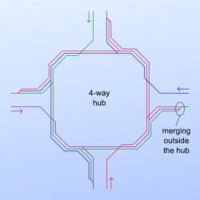
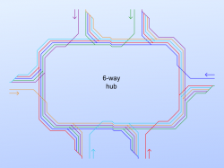
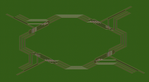
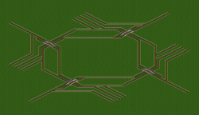
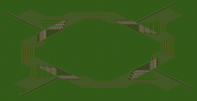
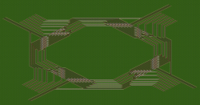

Big hubs in a nutshell – finding a universal hub design
Recently I started playing a game on my own, featuring some LL-RR main network. When I had to build my first ever 4-way hub for double tracks, I first took a look at the Junctionary just to find out that all hubs were designed quite different and hardly any of them follow all necessary rules (curve length, double bridges/tunnels, merge after split). I then started wondering if there’s a universal way of thinking about hubs.
There are only a few rules to follow when designing a hub with n ways:
- Every line that goes in goes out n-1 times (n times if you allow turning around)
- Merge after split – merge as late as possible
In addition there are a few OpenTTD-specific building rules:
- Curve length must be considered for all curves
- Bridges and tunnels must be doubled for flow
- When doubling bridges and tunnels make sure the lengths are the same (“syncing”)
There is nothing magical about these rules. But once you start building, you’ll find out that most of them are hard to obey, especially because usually there are lots and lots of crossings in a hub. Furthermore all those hubs tend to become unmaintainable, leading to jammed connections that nobody knows how to solve. So is there a way to get rid of the crossings and get a more clean design? 
Let’s take a look at the image above: it shows a 4-way single-line hub following the general rules (without the building-specific ones): every line that goes in goes out n-1 times. Merging occurs right after the hub, allowing for easy balancing or whatever you desire.

The magic of this design is that it is really easy to understand and it is extensible. You can use this to build a 6-way or even an 8-way hub – it just makes the hub bigger, but not more complex! 
This image shows the same technique applied on a 6-way hub. You can see that there is no difference to the 4-way hub but a bigger number of lines going around.
The building principle is as simple as it can get: inject an incoming line to the innermost ring and lead out all lines in parallel when building an exit. The outermost line leaves the ring completely when it has reached the n-1st exit.

Casting this into real rails
To test my theory I’ve designed 4×1 hubs and 4×2 hubs without signals but with doubled bridges and a curve length of 8.  
The image above shows a single line 4-way hub using the given schema. Of course there’s room for improvement, e.g. saving space by bypassing the first exit and thus saving a row of bridges:
I left out the merging in my design, to show that any kind of merging (just connecting the lines or building load-balancers) can be applied separately for each exit.


The usual #openttdcoop hub is at least for mainlines of 2 tracks. So of course I had to build 4×2 hubs too:  
As you can see inserting 2 tracks at once is absolutely the same as inserting 1 track. Taking the tracks out just requires more rows of bridges. Of course there’s also an optimized version of this hub:


Summary
The given hub design is quite similar to the roundabout hubs frequently used by inexperienced players (or if the network load is not too high), but without the merge-before-split disadvantage. I decided to name the hub design spiral hub (because the lines move 1 step outward at each exit).
Advantages:
- Easy to understand, easy to build and maintain
- Extensible
- Can be used for any sensible amount of tracks and entries/exits
- No jamming inside the hub if merger/load balancer is far enough outside
- Never ever merge before split
- Allows for easy exit-specific load balancing
- Quite compact regarding the used area (you can build them around mountains, towns, lakes, …)
- Can be used with mixed mainlines (e.g. rails + maglev)
- Can be built to allow turning around (just take out the lines one exit later)
- Fits anywhere where you can put some parallel lines with long curves
Disadvantages:
- Quite a big overall footprint
- Longer travel distances than e.g. for straight east-west lines
After building a few of these hubs I think the general way of designing them should be as follows:
- Build the hub according to the general schema
- Optimize it to use shortcuts where you really need them to improve performance
As long as the general schema is not broken, the hub will always work as expected.
I’m looking forward to testing this design in one of the oncoming Public Server games. Comments are welcome!
Have fun!
davil
Categories: Development, OpenTTD, Tutorial
tneo May 31, 2009 16:03
Nice article. Downside to the design is, I think, that you’ll get huge hubs. However the simplicity might be more of an advantage. How many tiles width is the last image?
davil May 31, 2009 19:22
Die diagonal diameter is 48 tiles. The outer distance of the outermost bridges (E-W or N-S) is 59 tiles, so including the outgoing connectors it’s at least about 80 tiles long/wide.
planetmaker June 1, 2009 12:23
Good job and nice article on how to build a decent hub with good step-by-step explanations of the logic behind it 🙂
XeryusTC June 1, 2009 15:44
Nice article, it gives a good idea of what could be the best universal hub design 🙂
However I prefer to adapt hubs for their current location and fit them a bit to the landscape but not so much that the landscape becomes obstructive. This gives for a bigger variety of hubs which I quite like more than just using the same currently most effecient design over and over again.
Your solution reminds me of the central hub in Public Server game #16 though. It uses the same strategy but has it’s joins right after the split and it a bit ineffecient in that game as it was unbalanced and unpriod when first build. Maybe I should try the design again later.
Chris Booth June 2, 2009 10:30
I like this design but for small LL_RR main lines i way to large.
This will be a high TF design, and when signals on bridges and tunnels get released into trunk will not be needed.
I am personaly a fan of build a BBH from scratch.
davil June 2, 2009 17:35
I must agree that the last hub shown still has potential to be optimized. My point is that by starting the design like this you can easily get a working hub and then optimize it. In software development, you’d call this rapid prototyping with lots of refactoring 😉 (of course not all software related things can be translated to real-world scenarios)
I think the most important part is the late merging. This should make any junction much less error-prone when it’s under heavy load.
Signals on bridges (just found out that there is a patch waiting to be merged to trunk, yeah!) will also make this kind of hub much more compact. But since the number of crossings is minimized right from the start you’ll feel it less than in other designs.
XeryusTC June 2, 2009 17:39
I think that having the splits and joins as late as possible make this hub quite large, all joins are on the outside of the hub while if you would split when a line comes into the hub area and join lines there it would lead to the joins being on the inside. Ofcourse this will expand the overall footprint of the hub but it will be more square instead of having the exits on the ML like the case is on the current public server game. Although on there it is also a case of just building the loop way too big leaving too little space.
Lawsonuw June 13, 2009 16:58
That’s a very nice hub! Similar in many ways to my own experiments with 8 to 10 way hubs. I especially like that all merges happen outside of the hub.
It looks like the junction size could be cut nearly in half by moving the entrance track to the left of the exit tracks. This would allow these two track sections to nest together nicely. This change would also allow for shorter and more direct corner tracks. (ofc to continue driving on the right just mirror the result)
Lawson
sparr December 17, 2009 20:16
With curve length 3 and some creative rearrangement of the bridges you can build a LLL_RRR x LLL_RRR version of this hub in 46×46 tiles.
SpiceGuru June 2, 2012 05:01
I have created a sample SAV file with the design and a test scenario. How do I upload it?